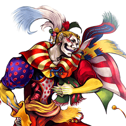

Final Fantasy VI
Kefka Palazzo
Zoneur défensif : Waggle-Wobbly Firaga, mobilité verticale d'élite et dégâts explosifs
Vue d'ensemble
Kefka est un zoneur défensif qui opère principalement à mi-distance et longue distance. Sa stratégie habituelle : créer de l'espace avec les reverse dashes et les Precision Jumps, puis lancer son Waggle-Wobbly Firaga signature — un projectile à tête chercheuse qui oscille entre les priorités Ranged Low et Ranged Mid et lance des combos sur hit. Cela pousse l'adversaire à venir au contact, ce qui prépare ses plus gros coups. Au corps à corps, il menace avec le Scatter-Spray Blizzaga en priorité mid ; de loin, il harcèle avec Extra-Crispy Firaga, Lickety-Split Thundaga, Hyperdrive ou Trine.
Ses forces : le contrôle d'espace, une bonne mobilité défensive et un énorme potentiel de dégâts. Sa haute ATK de base et les gros dégâts de base de ses braveries font très mal en combo d'assist ; EX Mode (via l'EX Doublecast) et Assist (setups de Chase HP en midscreen) démultiplient tous deux ses dégâts. Sa vitesse de dash suffit à l'autodéfense et son déplacement vertical est de première classe : Precision Jump crée de la distance très vite, et sa chute rapide rend son air dodge parmi les plus sûrs du jeu.
Ses faiblesses sont tout aussi marquées : génération d'EX faible qui le rend dépendant des EX Cores, limitant l'accès à son puissant EX Mode ; difficultés contre les projectiles qui apparaissent sur sa position et contre les rushdowns rapides, comme Lightning ou Onion Knight. Ses attaques en Ranged Low, aux startups télégraphés ou aux recovery longues, lui font prendre de gros risques — y compris dans l'économie de jauge d'assist, faute de poke rapide et sûr pour la générer. Utilisateur compétent des builds Side by Side, il peut toutefois établir un gros momentum sur une bonne touche.
En compétitif, Kefka a été évalué entre high tier et mid tier. Il prospère avec le momentum et peut beaucoup souffrir sans lui. Son contrôle d'espace reste bon même dans les petits stages, et s'il a des réponses aux situations (attaques rapides, HP à un coup), tout ce qu'il fait est committal : rien chez lui ne combine startup rapide et recovery courte. Son style défensif se détache malgré tout dans le roster et récompense grandement les joueurs dévoués.
Tier list 2017 (tournoi, dissidia.wiki) : A — 11ᵉ sur 30. Classé 11e (tier A) de la tier list 2017 ; l'overview indique qu'il a été évalué entre high tier et mid tier en compétitif, fort avec le momentum, fragile sans.
Forces
- Dégâts : haute ATK, synergie Side by Side, bons dégâts de base sur ses braveries de prédilection — son output brille quel que soit le build.
- Portée : laissé tranquille, il crée de la présence partout dans le stage, du Waggle-Wobbly Firaga au homing progressif jusqu'à Trine à portée infinie.
- Mobilité : l'un des plus forts utilisateurs de Precision Jump (vitesse et hauteur), chute rapide qui rend ses air dodges nettement plus durs à punir, dash suffisant pour occuper les agressifs.
- Jeu défensif : les reverse dashes au sol et en l'air créent vite une distance au service de ses braveries — il dicte le rythme du match.
- Momentum : chaque touche permet de relancer un Waggle-Wobbly Firaga et de durcir sa défense ; avec Side by Side et l'Assist Change LV2, il riposte en Havoc Wing et cimente son avantage en économie de jauges.
- EX Mode : lancer deux sorts à la fois amplifie énormément son contrôle d'espace et ses dégâts, et Ultima sort instantanément.
Faiblesses
- Vulnérable au whiff punish : beaucoup de ses braveries ont un startup long punissable à l'assist à la réaction ou contestable au Free Air Dash ; même Scatter-Spray Blizzaga, sa grande menace rapprochée, l'expose s'il est esquivé.
- Jauge d'assist sur whiff : sans poke rapide à faible engagement, générer de la jauge d'assist en sécurité est très difficile.
- Génération d'EX sur hit : deux de ses braveries de prédilection ne produisent aucune EX Force — son apport EX se limite souvent aux EX Cores, aux finishers d'Extra-Crispy Firaga et aux whiff punishes occasionnels en Lickety-Split Thundaga.
- Renverser le momentum : si l'adversaire intercepte systématiquement ses braveries à l'assist ou par l'approche offensive, Kefka doit prendre de gros risques pour survivre.
- Petits stages : les stages comme M.S. Prima Vista laissent moins de place pour créer de l'espace et lancer ses sorts en sécurité.
Stats & vitesses
| Nom | Kefka Palazzo (ケフカ・パラッツォ) |
|---|---|
| Jeu d'origine | Final Fantasy VI |
| ATK de base (LV100) | 111 (High) |
| DEF de base (LV100) | 110 (Low) |
| Vitesse de course | 11.5 (Very Slow) |
| Vitesse de dash | 81 (Below Average) |
| Vitesse de chute | 67 (Fast) |
| Chute après esquive | 13 (Fastest) |
| BRV la plus rapide | 13F (Scatter-Spray Blizzaga)1F (EX Mode Ultima) |
| HP la plus rapide | 51F (Havoc Wing) |
| HP en 1 coup | Yes (All) |
| HP links | Yes (Combos only) |
| Command block | No |
| Armes | Instruments, Poles, Rods, Staves |
| Armures | Bangles, Clothing, Hats, Hairpins,Headbands, Ribbons, Robes |
| Armes exclusives | Lamia's Flute, Nephilim Flute, Dancing Mad |
| Camp | Chaos |
| Doubleur (JP) | Shigeru Chiba |
| Doubleur (ENG) | Dave Wittenberg |
Valeurs brutes du wiki (page personnage) — plus la valeur est basse, plus le personnage est rapide. Trait pointillé or : moyenne des 31 personnages.
Coups
Startup en frames (60 i/s, données dissidia.wiki). Couleur : Melee Low · Melee Mid · Melee High · Ranged.
Braveries
Liste
All of Kefka's bravery attacks have a ground and a midair version. Attack data is shared between both versions.
Twisty-Turny Blizzaga Ranged Low
Sphère de glace en arc fixe qui traque l'adversaire après avoir touché le sol : l'un de ses moves les plus rapides en startup et recovery, longtemps actif, mais limité aux interactions sol-sol puisque le homing ne s'active pas sans sol. Usage principal : en début de match, forcer l'adversaire à bouger pour acheter du temps aux autres sorts — le projectile est assez rapide pour toucher un adversaire en dash par derrière. Le tir initial touche les adversaires aériens avec un hit stun correct, mais les dégâts sont faibles sans le follow-up (qui peut Wall Rush). En EX Mode : un hit supplémentaire à l'atterrissage maintient l'adversaire en place avant un dash de poursuite, et le projectile reste un moment en place même sur un miss.
| Dégâts de base | 30+ (5 x N, 25) |
|---|---|
| Startup | 21F |
| Type | Magical |
| Priorité | Ranged Low |
| EX Force | each 15 > 0 |
| Effets | Wall Rush |
| Cancels | Dodge |
| CP (maîtrisé) | 30 (15) |
Scatter-Spray Blizzaga Ranged Mid (1st) Ranged Low (spray)
L'une de ses braveries les plus fortes, utilisée au corps à corps pour repousser et convertir en combo d'assist (depuis Waggle-Wobbly Firaga) : startup 13F et priorité mid en font un mixup non réactable contre les agressifs, qui stagger même les blocks classiques vers un combo d'assist. Sur un bon read adverse, Kefka est grand ouvert au whiff punish (l'assist peut intercepter selon le matchup). Le projectile reste plus d'une seconde avant d'envoyer des éclats de glace ; attention, un block peut renvoyer les éclats vers Kefka. Les deux parties infligent un hit stun fixe : toucher à mi/max portée fait connecter les éclats plus régulièrement, mais même à bout portant tous les éclats ratent rarement — les combos d'assist démarrent donc de façon fiable même sur des touches superficielles. En EX Mode, les éclats poursuivent une seconde fois (et peuvent se recomboter), avec le même risque de renvoi sur block.
| Normal | EX Mode | |
|---|---|---|
| Dégâts de base | 41 (5, 6 x 6) | 77 (5, 6 x 6, 6 x 6) |
| Startup | 13F (1st) > 71F (spray) | 13F (1st) > 71F (1st spray) > ?? (2nd spray) |
| Type | Magical | Magical |
| Priorité | Ranged Mid (1st) Ranged Low (spray) | Ranged Mid (1st) Ranged Low (spray) |
| EX Force | 0 | 0 |
| Cancels | Dodge | Dodge |
| CP (maîtrisé) | 30 (15) |
Extra-Crispy Firaga Ranged Low
Bravery de prédilection : startup long et basse priorité le rendent mauvais à longue portée, mais la récompense sur hit est correcte et il synergise avec Scatter-Spray Blizzaga et Waggle-Wobbly Firaga. Souvent utilisé en combo d'assist pour ajouter des dégâts et créer des chase loops qui forcent du HP ou prolongent le combo aérien. Startup plus rapide et fenêtre de cancel plus tardive que Waggle-Wobbly Firaga : sert de mixup contre les tentatives d'assist punish à Auto Assist Lock On, l'adversaire attendant plutôt un Firaga ou un Blizzaga — à utiliser avec parcimonie en neutral. Deux hit stuns : le projectile initial repousse brièvement ; les trois projectiles homing après séparation envoient vers le haut avec assez de hit stun pour dodge cancel et appeler l'assist, puis relancer un Waggle-Wobbly Firaga en chase loop. À bout portant dans un coin ou juste au-dessus de l'adversaire, chaque projectile peut toucher deux fois (dégâts doublés) — excellent dans les petits stages à plafond bas comme Pandaemonium et Kefka's Tower, et cela scale très bien avec les builds de dégâts.
| Dégâts de base | 15 each (up to 45) |
|---|---|
| Startup | 49F |
| Type | Magical |
| Priorité | Ranged Low |
| EX Force | each 30 |
| Effets | Chase |
| Cancels | Dodge |
| CP (maîtrisé) | 30 (15) |
Waggle-Wobbly Firaga Ranged Low (small) Ranged Mid (big)
La pierre angulaire de son zoning : projectile lent à homing tenace, qui démarre en Ranged Low puis alterne avec Ranged Mid toutes les secondes — impossible à traverser en dash ni à bloquer sans stagger pendant les phases mid, avec des zigzags qui prennent à revers. C'est le sort à lancer ou préparer après chaque attaque dans la plupart des matchups contre le corps à corps. Sur hit, il maintient l'adversaire en place environ une seconde : combos vers d'autres moves ou l'assist, conversions HP solo très pratiques sans mur (Havoc Wing à proximité, Trine à la réaction), et le landing lag peut lancer un combo infini avec les Firagas suivants. Deux Firagas peuvent poursuivre simultanément (un troisième efface le premier, sauf si le premier est déjà en train de toucher). Vu le startup lent, il faut le lancer sans être interrompu : multi-sauts en Precision Jump vers un plafond haut, reverse Free Air Dash contre ceux qui doivent approcher (Vaan, Cloud, Prishe), ou juste après un assist, une HP attack ou un whiff adverse. Pas de cue audio distinct : un dash préalable masque le lancement derrière le cri du dash. En EX Mode, chaque cast produit deux projectiles et le maximum simultané passe à 4 — une raison majeure pour laquelle son EX Mode est l'un des plus forts du jeu.
| Dégâts de base | 21 (3 x 7) |
|---|---|
| Startup | 59F |
| Type | Magical |
| Priorité | Ranged Low (small) Ranged Mid (big) |
| EX Force | 0 |
| Cancels | Dodge |
| CP (maîtrisé) | 30 (15) |
Lickety-Split Thundaga Ranged Low
Série d'éclairs avançant en ligne à peu près droite : un punish longue portée relativement rapide, utile au whiff punishment, correct au sol malgré un tracking vertical très médiocre. Assez de hit stun pour comboter dans l'assist après un dodge cancel ou un empty chase instantané — demande un peu de pratique, mais c'est un départ de combo constant. En EX Mode, deux séries de bolts s'enchaînent (la seconde va plus loin) ; le dodge cancel après la première série n'annule pas la seconde, ce qui facilite la confirmation visuelle des conversions. À noter : un trou entre les éclairs peut le faire rater entièrement à bout portant, une portée où Kefka ne s'attarde de toute façon pas.
| Normal | EX Mode | |
|---|---|---|
| Dégâts de base | 15 each | 10 each |
| Startup | 35F | 35F |
| Type | Magical | Magical |
| Priorité | Ranged Low | Ranged Low |
| EX Force | 30 each | 21 each |
| Effets | Chase | Chase |
| Cancels | Dodge | Dodge |
| CP (maîtrisé) | 30 (15) |
Zap-Trap Thundaga Ranged Low
Fait apparaître progressivement des éclairs sur la position adverse : précision assez médiocre, mais conversions d'assist via empty chase instantané ou dodge cancel, et si plusieurs bolts s'enchaînent, l'un des plus gros frame advantages sur empty chase du jeu. Recovery assez basse : dodge cancel possible après les premiers bolts pour des follow-ups solo en Scatter-Spray Blizzaga et Havoc Wing, voire Waggle-Wobbly Firaga à bout portant — tous les bolts envoyant l'adversaire vers le haut, le positionnement est clé. Sa basse priorité, son startup lent et son absence de présence menaçante en neutral le rendent difficile à justifier face aux autres braveries, surtout en l'air où le trio Scatter-Spray / Waggle-Wobbly / Extra-Crispy synergise.
| Dégâts de base | each (10) |
|---|---|
| Startup | 65F |
| Type | Magical |
| Priorité | Ranged Low |
| EX Force | each 15 |
| Effets | Chase |
| Cancels | Dodge |
| CP (maîtrisé) | 30 (15) |
Meteor Ranged Low
Cinq boules de feu qui encerclent l'adversaire avant le homing : si tout connecte, l'une de ses braveries les plus fortes en dégâts et en EX Force. Souvent surclassée malgré tout — startup long, basse priorité, zone d'effet médiocre en l'air, faible récompense sans assist — et sans menace constante contre dashes et dodges ni protection à distance. En l'air, les boules descendent longtemps jusqu'au sol, ce qui la cantonne aux petits stages ou près du sol. Chaque projectile envoie vers le haut et combote dans l'assist et d'autres attaques ; difficile à confirmer visuellement en neutral, plus simple avec un Waggle-Wobbly Firaga en soutien et une position au-dessus de l'adversaire. En EX Mode, utilisable en l'air sans dépendance au sol : les projectiles stoppent leur descente avant de poursuivre, comme au sol.
| Dégâts de base | 15 each (up to 75) |
|---|---|
| Startup | 35F (first appearance) |
| Type | Magical |
| Priorité | Ranged Low |
| EX Force | each 30 |
| Effets | Chase |
| Cancels | Dodge |
| CP (maîtrisé) | 30 (15) |
Ultima Ranged Mid
Petit projectile devant Kefka puis large explosion de zone qui Wall Rush : peu utilisé, faible récompense sans mur et rôles remplis plus efficacement par ses autres braveries à startup presque aussi long. Plus consistant dans les petits stages (M.S. Prima Vista, Phantom Train) où il occupe plus d'espace avec plus de chances de Wall Rush, et ses explosions multiples font très mal avec les assists multi-hits (surtout à Phantom Train). En EX Mode, Ultima devient actif frame 1 — la bravery la plus rapide du jeu, au niveau du startup d'un block — et sa priorité Ranged Mid stagger vite les blocks adverses.
| Normal | EX Mode | |
|---|---|---|
| Dégâts de base | 40 (15, 25) | 40 (15, 25) |
| Startup | 33F (orb) > 89F (explosion) | 1F (orb) > 33F (explosion) |
| Type | Magical | Magical |
| Priorité | Ranged Mid | Ranged Mid |
| EX Force | 30 > 0 | 30 > 0 |
| Effets | Wall Rush | Wall Rush |
| Cancels | Dodge | Dodge |
| CP (maîtrisé) | 30 (15) |
Attaques HP
Liste
All of Kefka's HP attacks have a ground and a midair version, except Hyperdrive. Attack data is shared between both versions. Hyperdrive is only available on the ground.
Havoc Wing Melee High
Move de base : Kefka fond verticalement sur l'adversaire avant le hit HP d'ailes. HP à un coup constant, fort tracking vertical, longues frames actives : départ de combo d'assist après Waggle-Wobbly Firaga, finisher de combo d'assist, ou riposte après un block. Son tracking le rend fiable pour convertir un stagger d'Assist Change LV2 en dégâts HP — précieux avec Side by Side, et pour les checkmates avec assez de bravery. Les frames actives compliquent le whiff punish de face, mais la recovery reste longue. Aucun effet connu en EX Mode.
| Startup | 51F |
|---|---|
| Priorité | Melee High |
| EX Force | 0 |
| Effets | Wall Rush |
| Cancels | Dodge |
| CP (maîtrisé) | 30 (15) |
Hyperdrive Unblockable
Sol uniquement : vague à tête chercheuse dont maintenir Carré augmente hitbox et portée jusqu'à traverser de grandes distances ; chargé, il combote dans l'assist sur hit. Une fois lâché, il voyage très vite — bon pour les dodge punishes — et la relâche possible à tout moment permet de contrôler l'espace par la menace d'un tir anticipé. Bon tracking mais angle mort juste au-dessus de la tête de Kefka, et peu efficace contre ceux qui combattent confortablement en hauteur (Sephiroth, Gilgamesh). En EX Mode, il s'arrête en route pour réaligner son tracking (couvrant l'angle mort vertical, plus tôt s'il est peu chargé) ; activer l'EX Mode pendant le startup convertit automatiquement en version EX — utile dans des matchups comme Jecht qui cherchent le contact.
| Startup | 63F (LV1) 91F (LV2) 143F (LV3) Hitbox 3F after button release |
|---|---|
| Priorité | Unblockable |
| EX Force | 60 |
| Cancels | Dodge |
| CP (maîtrisé) | 30 (15) |
Trine Ranged High
Trois projectiles homing autour de l'adversaire : combote dans les assists et le Scatter-Spray Blizzaga en dodge cancel sur hit, mais sa plus grande force est sa portée infinie. Il convertit les Waggle-Wobbly Firagas errants et harcèle les adversaires qui vont chercher un EX Core, même derrière des murs ou à l'autre bout du stage — dasher vers un Core peut se solder par un contact avec le sort. En EX Mode, Trine est lancé deux fois coup sur coup : la fenêtre de dodge cancel est identique, mais un dodge trop tôt annule le second Trine — retardez-le légèrement pour que les deux sortent.
| Startup | 73F |
|---|---|
| Priorité | Ranged High |
| EX Force | each 21 |
| Cancels | Dodge |
| CP (maîtrisé) | 30 (15) |
Forsaken Null Ranged High
Sigle qui traque lentement l'adversaire en tirant des sphères une à une : souvent surclassé par ses autres HP à cause du startup extrêmement lent, du homing et de la cadence sans trait saillant — il ne couvre pas la distance comme Trine ni ne soutient le corps à corps comme Havoc Wing. Sur hit il Wall Rush, y compris au sol contre un adversaire équipé d'Auto Recovery. En EX Mode, un projectile supplémentaire part vers le haut, augmentant la portée potentielle — mais il reste assez facile à esquiver.
| Startup | 89F |
|---|---|
| Priorité | Ranged High |
| EX Force | 0 |
| Effets | Wall Rush |
| Cancels | Dodge |
| CP (maîtrisé) | 30 (15) |
EX Mode: Power of Destruction! & EX Burst
EX Mode « Power of Destruction! » — effets : Regen, Critical Boost, Glide (maintenir X en l'air pour se déplacer librement dans les airs) et Exhilarating Magic (toujours actif : tous les sorts deviennent plus chaotiques — projectiles multiples, rebonds magiques et autres effets imprévisibles).
Concrètement, chaque sort gagne un effet documenté : Waggle-Wobbly Firaga lance deux projectiles par cast avec un maximum simultané porté à 4 (raison majeure pour laquelle cet EX Mode est décrit comme l'un des plus forts du jeu), Ultima devient actif frame 1 (la bravery la plus rapide du jeu), Scatter-Spray Blizzaga fait poursuivre ses éclats une seconde fois, Lickety-Split Thundaga tire deux séries de bolts, Meteor devient utilisable en l'air sans dépendre du sol, Trine est lancé deux fois, Hyperdrive réaligne son tracking en route (couvrant son angle mort vertical), Twisty-Turny Blizzaga gagne un hit de maintien à l'atterrissage et Forsaken Null un projectile supplémentaire vers le haut. Seul Havoc Wing n'a aucun effet connu.
Le revers documenté : la génération d'EX de Kefka est faible — deux de ses braveries de prédilection ne produisent aucune EX Force — et il dépend donc surtout des EX Cores pour accéder à ce puissant EX Mode.
EX Burst : Light of Judgment : une lumière descend des cieux et purifie tout sur son passage. Mémorisez les commandes affichées, puis entrez-les dans l'ordre.
Mécanique unique
Plan de jeu & techniques avancées
La boucle de jeu : créer de l'espace (reverse dashes au sol et en l'air, Precision Jump vers les hauteurs), puis lancer Waggle-Wobbly Firaga dans les moments sûrs — après un assist, une HP attack ou un whiff adverse. Le projectile à priorité oscillante interdit dash et block sans stagger et force l'adversaire à s'exposer. Sur hit, il maintient la cible une seconde : conversion en combo d'assist, en Havoc Wing à proximité ou en Trine à la réaction, et chaque touche permet d'en relancer un autre pour durcir la défense.
Au corps à corps, Scatter-Spray Blizzaga (13F, priorité mid) est le mixup non réactable qui repousse les agressifs et convertit en combo d'assist, y compris sur block stagger. À distance, Extra-Crispy Firaga (mixup anti assist punish et moteur des chase loops), Lickety-Split Thundaga (whiff punish avec conversions via dodge cancel ou empty chase), Hyperdrive (contrôle d'espace à la charge, dodge punish) et Trine (portée infinie, harcèlement des EX Cores) complètent l'arsenal. La combinaison documentée en l'air est Waggle-Wobbly, Scatter-Spray et Extra-Crispy.
Les dégâts passent par les combos d'assist, où sa haute ATK et ses dégâts de base font très mal : le cœur est le chase loop Waggle-Wobbly Firaga > Extra-Crispy Firaga avec l'assist Kuja, qui force du HP ou prolonge le combo. En solo, les routes documentées partent de Waggle-Wobbly Firaga (vers SSB, ECF, LST, Meteor, Havoc Wing ou Trine), de Trine (vers Scatter-Spray Blizzaga) et de Lickety-Split Thundaga (dodge cancel vers SSB ou Trine).
Côté ressources, tout est arbitrage : la jauge d'assist ne se remplit pas en sécurité faute de poke rapide, et l'EX vient surtout des EX Cores. Side by Side transforme chaque bonne touche en gros momentum, et l'Assist Change LV2 se convertit en Havoc Wing grâce à son tracking. À l'inverse, si l'adversaire intercepte les braveries à l'assist ou impose un rushdown rapide (Lightning, Onion Knight), Kefka doit prendre de gros risques — et les petits stages réduisent sa marge pour lancer ses sorts en sécurité, même si son contrôle d'espace y reste correct.
Techniques spécifiques
Chase loop Waggle-Wobbly > Extra-Crispy
Après un hit converti à l'assist, les projectiles séparés d'Extra-Crispy Firaga donnent assez de hit stun pour dodge cancel, appeler l'assist et relancer un Waggle-Wobbly Firaga : la boucle force des dégâts HP ou continue le combo aérien. La plus simple à mettre en place avec l'assist Kuja depuis n'importe quel hit ; possible avec Jecht mais plus difficile (positionnement très proche requis).
Double hit d'Extra-Crispy Firaga
À bout portant dans un coin ou juste au-dessus de l'adversaire, les trois projectiles peuvent toucher deux fois chacun : dégâts doublés, très rentables dans les petits stages à plafond bas (Pandaemonium, Kefka's Tower) et avec les builds de dégâts. La cause exacte est incertaine (probablement la transition quand le projectile se sépare en trois).
Masquage de Waggle-Wobbly Firaga
Le sort n'a pas de cue audio distinct au startup : dasher d'abord puis entrer l'attaque immédiatement masque le lancement derrière le cri du dash, pendant que la mobilité verticale place Kefka hors du champ de la caméra adverse.
Landing lag infini au Firaga
Waggle-Wobbly Firaga inflige un landing lag sur hit, qui peut lancer un combo infini avec les Waggle-Wobbly Firagas suivants (aucun knockback en fin de hit, fenêtre de combo brève mais réelle).
Conversions empty chase / dodge cancel des Thundagas
Lickety-Split Thundaga combote dans l'assist après dodge cancel ou empty chase instantané ; Zap-Trap Thundaga fait de même et, si plusieurs bolts s'enchaînent, offre l'un des plus gros frame advantages sur empty chase du jeu, avec des follow-ups solo (Scatter-Spray Blizzaga, Havoc Wing) après dodge cancel des premiers bolts.
Trine anti-EX Core
Grâce à sa portée infinie, Trine harcèle les adversaires qui vont chercher un EX Core, même lancé derrière des murs ou depuis l'autre bout du stage : dasher vers le Core peut les jeter dans le sort. Il convertit aussi les Waggle-Wobbly Firagas errants.
Conversion EX de Hyperdrive
Activer l'EX Mode pendant le startup de Hyperdrive le convertit automatiquement en version EX (réalignement du tracking en route, couverture de l'angle mort vertical) — utile contre ceux qui cherchent le contact, comme Jecht.
Combos documentés (notation d'origine, dissidia.wiki)
Many of Kefka's attacks can function as combo starters. Most function as assist combo starters, but few allow Kefka to combo by himself.
Scatter-Spray Blizzaga (SSB), Waggle-Wobbly Firaga (WWF), Extra-Crispy Firaga (ECF), Zap-Trap Thundaga (ZTT), Lickety-Split Thundaga (LST), Trine.
Waggle-Wobbly Firaga > SSB / ECF / LST / Meteor / Havoc Wing / Trine Trine > Scatter-Spray Blizzaga Lickety-Split Thundaga > DC > SSB / Trine
Techniques universelles (blodge, dash feint, lock off, dodge punishment) : voir la page Techniques & glitches.
Matchups
La page matchups dédiée est un stub : seuls les éléments de l'overview et des notes de coups font foi.
Ses difficultés documentées : les projectiles qui apparaissent sur sa position et les styles rushdown rapides, Lightning et Onion Knight étant cités nommément. Hyperdrive est en outre peu efficace contre les personnages qui combattent confortablement en hauteur, comme Sephiroth et Gilgamesh, et les petits stages (M.S. Prima Vista) compriment son espace de cast.
Face aux personnages qui doivent l'approcher — Vaan, Cloud, Prishe sont cités — le reverse Free Air Dash est l'option de déplacement généraliste qui achète le temps de lancer Waggle-Wobbly Firaga, la réponse à privilégier dans la plupart des matchups contre le corps à corps. Contre Jecht, qui cherche le contact, la conversion EX de Hyperdrive est mentionnée comme utile.
Vidéos de matchs : Replay Theater — matchs de Kefka Palazzo.
Builds
Kefka équipe généralement Waggle-Wobbly Firaga, Scatter-Spray Blizzaga et Extra-Crispy Firaga en braveries aériennes. Deux builds sont documentés (450 CP, Equip Glitch supposé), reflétant l'arbitrage de l'overview entre dégâts et accès à l'EX.
« Hybrid » : un build de dégâts standard avec apport d'EX activé — 10299 HP, 917 BRV, 180 ATK, 183 DEF, booster max x7.4 ; assist Kuja, summon Rubicante ; Dancing Mad avec Lufenian Dirk, Lufenian Headband et Lufenian Vest (effet spécial Seal of Lufenia) ; accessoires : Hyper Ring, Earring, Battle Hammer, Large Gap in HP, BRV > Base Value, Pre-EX Mode, Pre-EX Revenge, Aerial, Opponent HP < 50 %, Tenacious Attacker.
« High Initial EX » : démarre le match avec 90 % de la jauge EX remplie — 10299 HP, 956 BRV, 179 ATK, 185 DEF, sans booster ; assist Jecht ; Dancing Mad avec Lufenian Shield, Lufenian Helm et Lufenian Armor (effet spécial Judgment of Lufenia) ; accessoires : Earring, Dismay Shock, Battle Hammer, trois Cyan Drop, Cyan Gem, Tenacious Attacker, Glutton, First to Victory.
| Stats | |
|---|---|
| HP | 10299 |
| CP | 450 |
| BRV | 917 |
| ATK | 180 |
| DEF | 183 |
| LUK | 60 |
| Max Booster | x7.4 |
| Equipment | |
|---|---|
| Assist | Kuja |
| Weapon <img></img> | Dancing Mad |
| Hand <img></img> | Lufenian Dirk <img></img> |
| Head <img></img> | Lufenian Headband |
| Body <img></img> | Lufenian Vest <img></img> |
| Accessory 1 | <img></img> Hyper Ring |
| Accessory 2 | <img></img> Earring |
| Accessory 3 | <img></img> Battle Hammer |
| Accessory 4 | <img></img> Large Gap in HP |
| Accessory 5 | <img></img> BRV > Base Value |
| Accessory 6 | <img></img> Pre-EX Mode |
| Accessory 7 | <img></img> Pre-EX Revenge |
| Accessory 8 | <img></img> Aerial |
| Accessory 9 | <img></img> Opponent HP < 50 % |
| Accessory 10 | <img></img> Tenacious Attacker |
| Summon <img></img> | Rubicante |
| Bravery attacks | |
|---|---|
| Ground | Aerial |
| HP attacks | |
| Ground | Aerial |
| Stats | |
|---|---|
| HP | 10299 |
| CP | 450 |
| BRV | 956 |
| ATK | 179 |
| DEF | 185 |
| LUK | 60 |
| Max Booster | None |
| Equipment | |
|---|---|
| Assist | Jecht |
| Weapon <img></img> | Dancing Mad |
| Hand <img></img> | Lufenian Shield <img></img> |
| Head <img></img> | Lufenian Helm <img></img> |
| Body <img></img> | Lufenian Armor <img></img> |
| Accessory 1 | <img></img> Earring |
| Accessory 2 | <img></img> Dismay Shock |
| Accessory 3 | <img></img> Battle Hammer |
| Accessory 4 | <img></img> Cyan Drop |
| Accessory 5 | <img></img> Cyan Drop |
| Accessory 6 | <img></img> Cyan Drop |
| Accessory 7 | <img></img> Cyan Gem |
| Accessory 8 | <img></img> Tenacious Attacker |
| Accessory 9 | <img></img> Glutton |
| Accessory 10 | <img></img> First to Victory |
| Summon <img></img> |
| Bravery attacks | |
|---|---|
| Ground | Aerial |
| HP attacks | |
| Ground | Aerial |
Les coups équipés des deux builds ne sont pas renseignés dans les tableaux (seule la phrase générale sur les trois braveries aériennes fait foi), et aucun summon n'est indiqué pour le build High Initial EX.
Synergies d'assist
Kefka Palazzo en tant qu'assist
En tant qu'assist, Kefka est classé en tier Low de la tier list assist, et aucune évaluation en prose n'accompagne ses données. Ses attaques d'assist : Meteor en BRV au sol (35F, spawn sur le joueur, jusqu'à 75 de dégâts, Chase), Extra-Crispy Firaga en BRV aérien (49F, spawn sur l'adversaire, jusqu'à 45, Chase), Hyperdrive en HP au sol (143F, Chase) et Havoc Wing en HP aérien (51F, Wall Rush).
Assists recommandées
- Kuja — Son assist le plus fort et le plus constant : le BRV aérien Strike Energy synergise avec ses braveries de prédilection partout dans le stage. Le plus simple pour monter le chase loop Waggle-Wobbly Firaga > Extra-Crispy Firaga depuis n'importe quel hit, il crée aussi de l'espace pour un Firaga supplémentaire via Trine, et prépare même le double damage d'Extra-Crispy dans un coin. Au corps à corps : Trine après l'assist puis Scatter-Spray Blizzaga pour des critiques garantis qui déchiquettent la bravery.
- Jecht — Assist au sol plus rapide et bon potentiel de maintien, mais il requiert souvent le sol pour optimiser les combos du BRV aérien. Ce qu'il perd en constance des dégâts selon la position, il le compense en setups : comboter un Meteor dans Waggle-Wobbly Firaga, enchaîner après le HP Hyperdrive, préparer les follow-ups près du sol. Le chase loop Firaga reste possible mais plus exigeant (positionnement très proche de l'adversaire).
Tech communautaire
Conversion d'assist sur Scatter-Spray Blizzaga bloqué
Exemple vidéo du block stagger de Scatter-Spray Blizzaga converti en combo d'assist.
Éclats de Scatter-Spray Blizzaga renvoyés vers Kefka sur block
Démonstration du renvoi des éclats de glace vers Kefka quand le projectile mid est bloqué.
Éclats EX de Scatter-Spray Blizzaga réfléchis sur block
Même comportement en EX Mode : les éclats répétés peuvent poursuivre Kefka si le projectile est bloqué.
Hit faible d'Extra-Crispy Firaga
Exemple du hit stun bref du projectile initial, qui repousse simplement l'adversaire.
Hit fort d'Extra-Crispy Firaga converti en assist
Exemple des projectiles séparés envoyant vers le haut avec assez de hit stun pour dodge cancel et follow-up d'assist.
Double hit d'Extra-Crispy Firaga au-dessus de l'adversaire
Exemple du double hit des trois projectiles juste au-dessus de la cible.
Double hit d'Extra-Crispy Firaga (en match)
Autre exemple du comportement de double hit.
Double hit d'Extra-Crispy Firaga (2)
Second exemple complémentaire du double hit.
Combo d'assist sur Lickety-Split Thundaga en dodge cancel
Démonstration de la conversion en assist après dodge cancel.
Combo d'assist sur Lickety-Split Thundaga en empty chase
Démonstration de la conversion via empty chase instantané.
Hitbox de Lickety-Split Thundaga à bout portant
Illustration du trou entre les éclairs qui peut faire rater le move entièrement de très près.
Zap-Trap Thundaga en empty chase vers assist
Exemple de conversion d'assist via empty chase instantané.
Zap-Trap Thundaga en dodge cancel
Exemple du dodge cancel après les premiers bolts.
Combos solo depuis Zap-Trap Thundaga
Exemples de follow-ups solo (Scatter-Spray Blizzaga, Havoc Wing) après dodge cancel.
Meteor en dodge cancel vers assist
Exemple de conversion d'assist depuis les projectiles de Meteor.
Sources
- https://dissidia.wiki/Kefka_Palazzo_(Dissidia_012)
- https://www.youtube.com/watch?v=66QtcOnaWos&t=51s
- https://www.youtube.com/watch?v=66QtcOnaWos&t=16s
- https://www.youtube.com/watch?v=66QtcOnaWos&t=59s
- https://www.youtube.com/watch?v=LaMMvK8bmnU
- https://www.youtube.com/watch?v=LaMMvK8bmnU&t=12s
- https://www.youtube.com/watch?v=LaMMvK8bmnU&t=45s
- https://www.youtube.com/watch?v=1zOrrOI4WvE&t=236s
- https://www.youtube.com/watch?v=LaMMvK8bmnU&t=50s
- https://www.youtube.com/watch?v=iUK7ak7mKag
- https://www.youtube.com/watch?v=iUK7ak7mKag&t=35s
- https://www.youtube.com/watch?v=iUK7ak7mKag&t=29s
- https://www.youtube.com/watch?v=WQaW9dZop-A&t=36s
- https://www.youtube.com/watch?v=WQaW9dZop-A&t=16s
- https://www.youtube.com/watch?v=WQaW9dZop-A
- https://www.youtube.com/watch?v=sfztRLFzEF4
- https://dissidia.wiki/Tier_List_(Dissidia_012)
- https://dissidia.wiki/Tier_List_(Assist)
Limites connues
- Page matchups dédiée non documentée (stub) : la synthèse matchups repose uniquement sur l'overview et les notes de coups (Lightning, Onion Knight, Sephiroth, Gilgamesh, Jecht, Vaan, Cloud, Prishe).
- Aucune mécanique unique documentée (section absente des sources).
- Combos : seules les routes solo sont listées (en notation abrégée, sans dégâts ni conditions détaillées) ; aucun combo d'assist chiffré.
- Builds : coups équipés non renseignés pour les deux builds, summon absent du build High Initial EX.
- Assist : aucune évaluation en prose de Kefka en tant qu'assist (données de table et tier Low de meta uniquement) ; valeurs d'assist gain des coups non renseignées.
- Les références YouTube ne sont pas datées (champ date à null) ; le startup de la seconde salve EX de Scatter-Spray Blizzaga est inconnu (« ?? »).